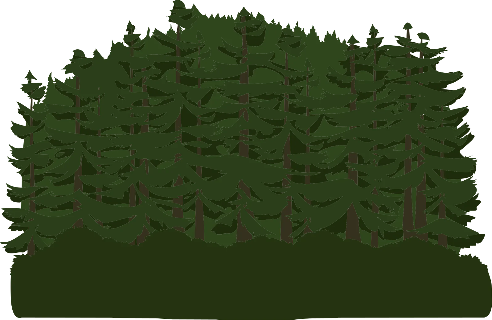
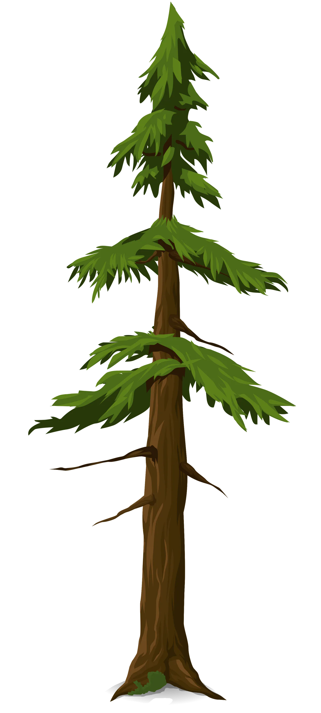
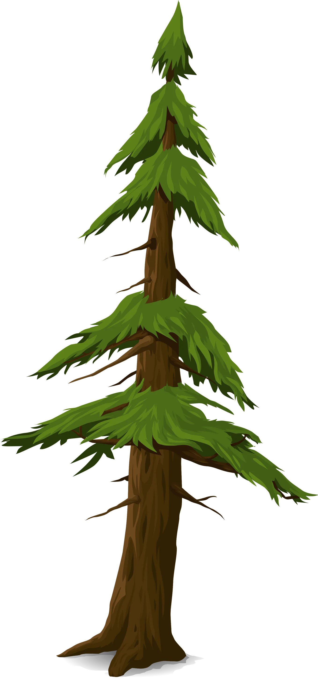
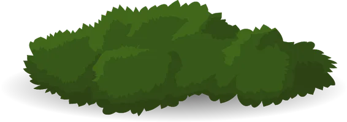
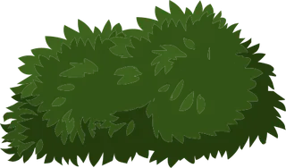

Walk a street
A simplified Hechey Track, drawn with the game's own sprites. Click anything you'd find on a street in Ur to see what's been restored behind it.





Every system, checked off
The whole game, system by system. This list lives in the code and is rebuilt with every session, so it ticks over as things land.
By the numbers
Counted straight from the repository: nothing here is typed in by hand.
Where the 445 original quests stand
Quest rooms, rebuilt
Many of Glitch's best quests happened in private rooms built just for you. Only a handful survive in the archive, so most are reconstructed from the quest's code (its timers, flags, dialogue and rewards) and recordings players and Tiny Speck's own level designer left behind. Pick a room to read its story.
Recently restored
The latest additions and fixes, straight from the project's history.
What can't come back, and how the rest was made
Gone for good
Things that only made sense with other players are adapted for one where it works (races against rival Glitches, Feats with companions, street projects with a hired hand) and left out where it doesn't.